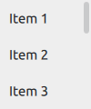
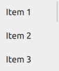

Indicator Controls
Qt Quick Controls offers a selection of indicator-like controls.
Indicates background activity, for example, while content is being loaded | |
Indicates the currently active page | |
Indicates the progress of an operation | |
Vertical or horizontal interactive scroll bar | |
Vertical or horizontal non-interactive scroll indicator |
Each type of indicator has its own specific target use case. The following sections offer guidelines for choosing the appropriate type of indicator, depending on the use case.
BusyIndicator Control
BusyIndicator can be used to show that an operation is in progress, and that the UI has to wait for the operation to complete.
PageIndicator Control
PageIndicator is used to indicate the currently active page in a container of multiple pages.
ProgressBar Control
ProgressBar indicates the progress of an operation. The value should be updated regularly.
ScrollBar Control

ScrollBar is an interactive bar that indicates the current scroll position, and can be used to scroll to a specific position in a Flickable.
ScrollIndicator Control

ScrollIndicator is a non-interactive indicator that indicates the current scroll position, and can be used to scroll to a specific position in a Flickable.